무엇이 나왔나: 출시와 벤치마크
Moonshot AI(Artificial Intelligence)가 새 모델 Kimi K3.1 Pro를 내놨어요. 아래는 Kimi 공식 계정이 올린 소개 글이에요. 첫 문장이 'our most capable 3T-class model', 곧 자기들 모델 중 가장 강한 3조 파라미터급이라는 뜻이에요. 영상 속 화면은 이 모델이 Unreal Engine으로 만든 옥상 파쿠르 장면이에요.
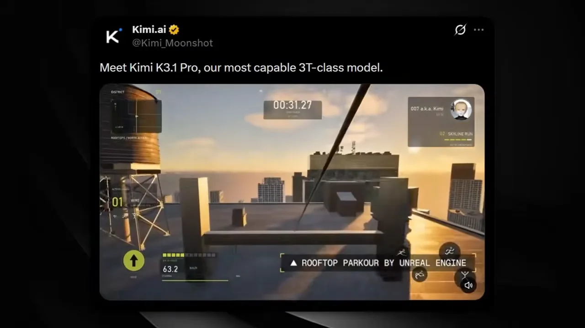
진행자가 가장 크게 보는 점은 오픈 웨이트 모델이 Claude Opus 5.5, GPT-6 Astra 같은 최상위 유료 모델과 정면으로 겨룬다는 거예요. 코딩, 에이전트 작업, 3D 모델링, 공간 추론, 금융 리서치에서 모두 크게 나아졌다고 해요.
벤치마크: 앞서는 곳과 뒤지는 곳
아래는 공식 블로그의 벤치마크 표 일부예요. 파란 막대가 Kimi K3.1 Pro예요. 왼쪽 위 Terminal-Bench 4.0에서는 65.7로 Opus 5.5(66.4) 바로 아래, GPT-6 Astra(58.2)보다 위에 있어요. 오른쪽 위 SWE Marathon에서는 51.7로 1위예요.
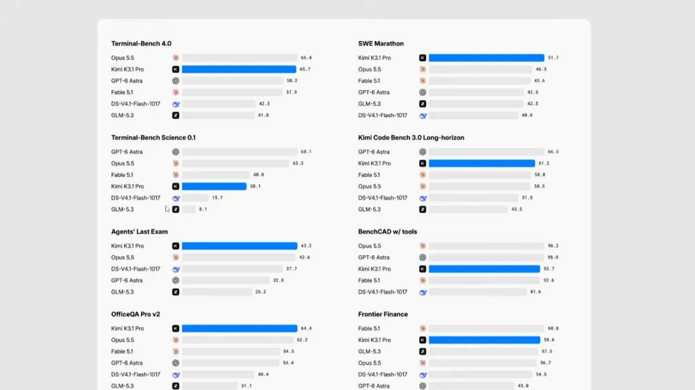
진행자는 보고된 14개 벤치마크 중 Opus 5.5를 9개, GPT-6 Astra를 10개쯤 이긴다고 정리해요. 특히 금융 모델링과 엑셀 작업을 강조해요. 아래는 Kimi가 엔비디아 가치평가 모델을 스프레드시트로 짜는 장면이에요. 왼쪽에 작업 단계가, 오른쪽에 손익계산서 시트가 채워지고 있어요.
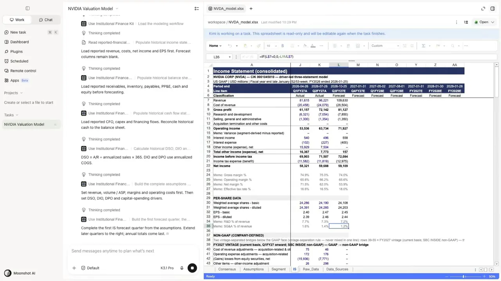
외부 평가도 보여 줘요. 아래 Artificial Analysis Intelligence Index에서 파란 막대 Kimi K3.1 Pro는 55점으로 4위예요. 보라색 화살표는 이전 모델 Kimi K3(44점) 자리에서 올라온 거리예요.
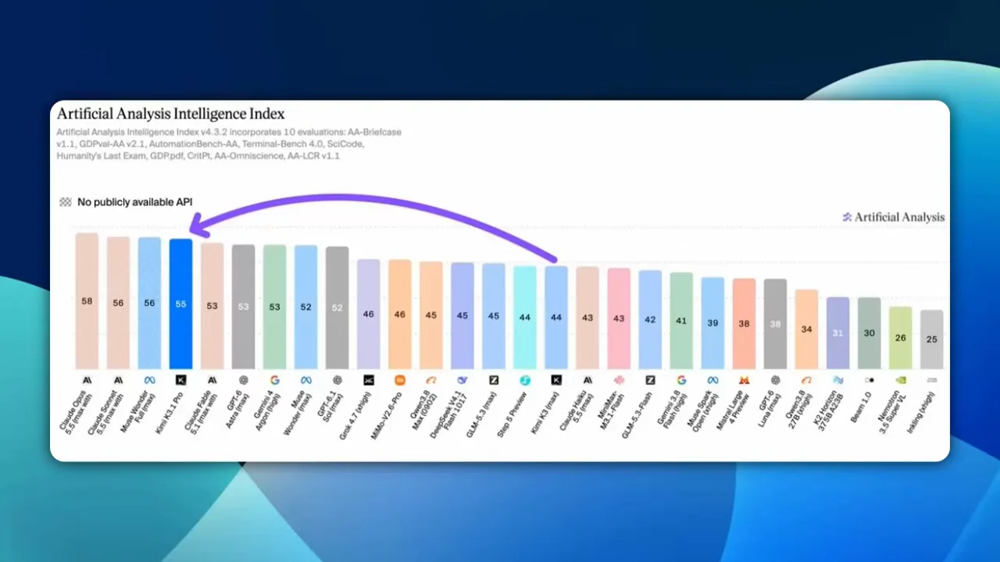
가격과 쓰는 곳
가격도 화면에 나와요. 아래 표 위 작은 글씨는 'K3.1 Pro launches at 2/3 of K3's price', 곧 K3 값의 3분의 2로 나왔다는 뜻이에요. 가운데 열이 K3.1 Pro, 오른쪽 열이 더 빠른 Highspeed예요.
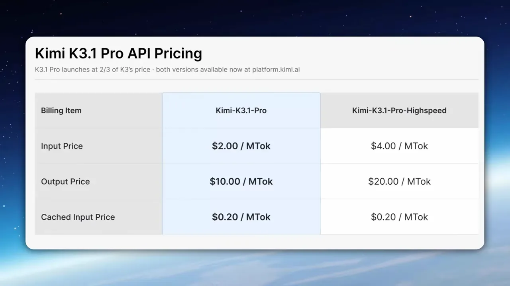
| 항목 (100만 토큰당) | K3.1 Pro | K3.1 Pro Highspeed |
|---|---|---|
| 입력 | 2달러 | 4달러 |
| 출력 | 10달러 | 20달러 |
| 캐시된 입력 | 0.2달러 | 0.2달러 |
같은 작업을 시켰을 때 든 돈을 나란히 놓은 비교도 나와요. 아래 왼쪽 쌍은 같은 3D 장면을 Kimi가 0.76달러, Opus 5.5가 1.71달러에 만든 결과예요. 오른쪽 쌍은 1.02달러 대 4.38달러예요.
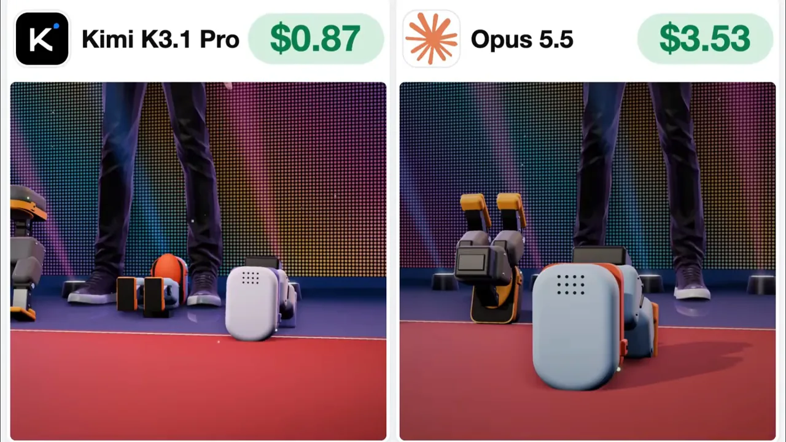
모델은 Kimi 챗봇에서 무료로 써 볼 수 있고 API로도 쓸 수 있어요. 아래 입력창 오른쪽에 모델 선택이 'K3.1 Pro High'로 돼 있고, 아래에 3D Make, Slides, Deep Research, Build, Docs, Sheets 같은 작업 버튼이 있어요. 코딩용 요금제도 따로 있다고 해요.
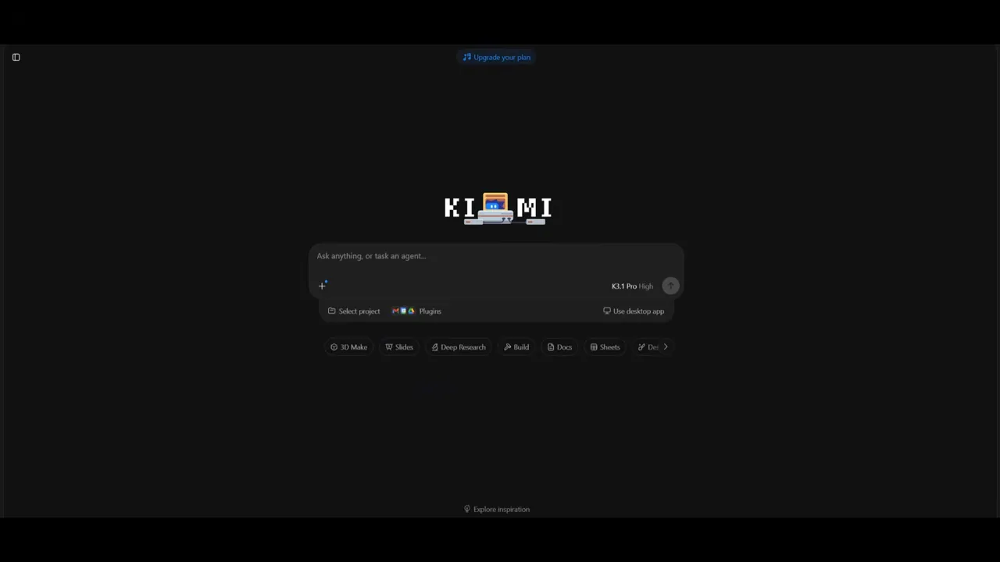
웹과 게임 데모
진행자는 이 모델이 웹 개발에서 특히 잘한다고 먼저 말해요. 프런트엔드 작업이라면 값이 GPT-6 Astra보다 80% 싸면서 결과는 비슷하거나 더 낫다는 게 그의 평가예요. 데모 몇 개를 차례로 보여 줘요.
랜딩 페이지와 편집기
아래는 진행자의 벤치마크 도구에서 Kimi가 만든 랜딩 페이지예요. 오른쪽 화면은 파랑·노랑·빨강이 크게 갈린 색면 위에 큰 따옴표 문장을 얹은 디자인이에요. 왼쪽 패널에는 이 결과에 매긴 점수가 보여요.
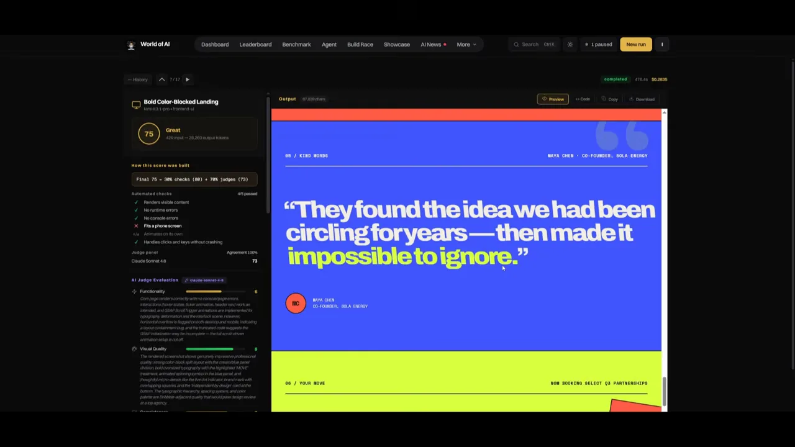
또 다른 랜딩 페이지도 있어요. 아래는 'VERSO'라는 가상 서비스 페이지예요. 신문 같은 세리프 글꼴 제목 아래에 작은 막대그래프와 메모 카드가 겹쳐 있어요.
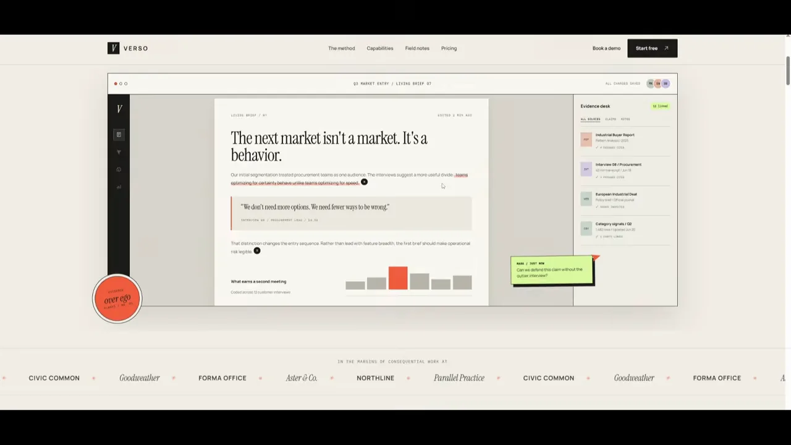
브라우저에서 도는 게임 두 편
첫 번째는 게임 「Ghost of Tsushima」를 흉내 낸 클론이에요. 아래 화면 가운데에 'GHOST SAMURAI'라는 제목이 뜨고, 벚꽃과 대나무, 다리 위의 사무라이가 보여요.
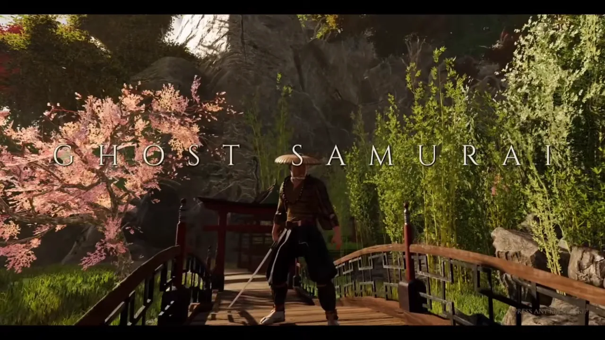
두 번째는 「Call of Duty」 좀비 모드를 흉내 낸 게임이에요. 아래 1인칭 화면 왼쪽 아래에 라운드 1과 점수 500, 오른쪽 아래에 탄약 8/32가 보여요. 판자로 막힌 창문과 낡은 벽도 질감이 살아 있어요.
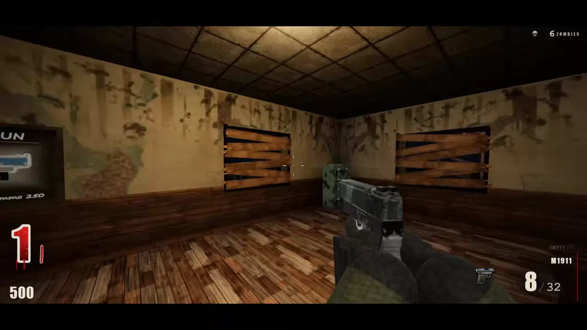
진행자는 모델이 만든 좀비 디자인 파일도 열어 봐요. 아래처럼 좀비 여덟 마리가 줄지어 서 있고, 왼쪽 위 버튼으로 동작을 바꿔 볼 수 있어요.
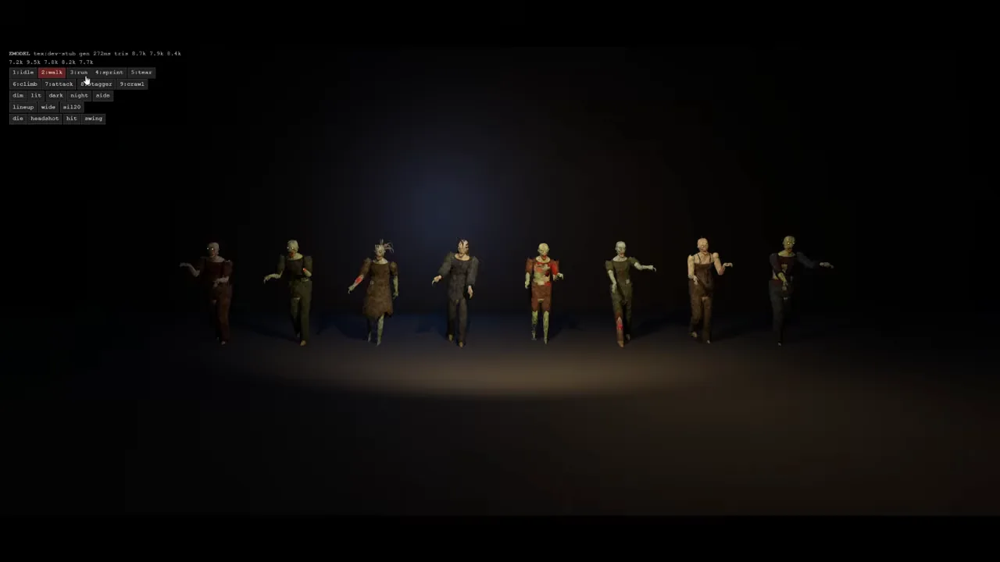
Opus 5.5 · GPT-6 Astra와 3D 비교
"Opus 5.5만큼 좋은가?"라는 질문에 진행자는 "예이면서 아니오"라고 답해요. 세상에서 가장 좋은 모델은 아니라고 분명히 말해요. 다만 값을 생각하면 여러 분야에서 최상위 모델 대신 쓸 만하다고 봐요. 3D와 Blender 작업은 Opus 5.5보다 낫고, 실무형 에이전트 코딩은 Opus 5.5와 GPT-6 Astra가 아직 앞선다는 게 그의 구분이에요.
Three.js 비교: 범선, 말, 뉴욕
먼저 범선이에요. 아래 화면 위는 Opus 5.5, 아래는 Kimi K3.1 Pro가 같은 요청으로 만든 바다 위 범선이에요. 위는 초록빛 물결, 아래는 노을 진 바다예요.
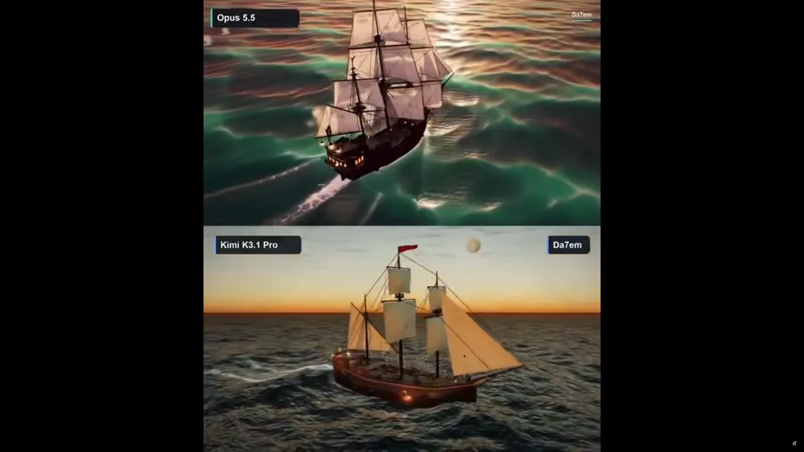
다음은 달리는 말 애니메이션이에요. 아래 세 칸이 위에서부터 Kimi K3.1, Claude Opus 5.5, GPT-6 Astra예요.
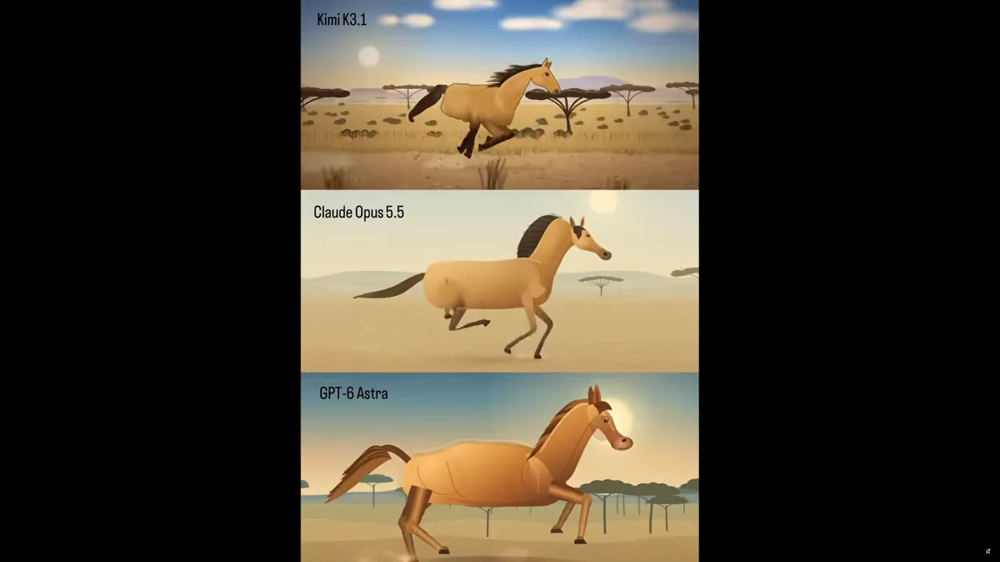
뉴욕 스카이라인에서는 결과가 달라요. 아래 위는 Kimi, 아래는 Opus 5.5예요.
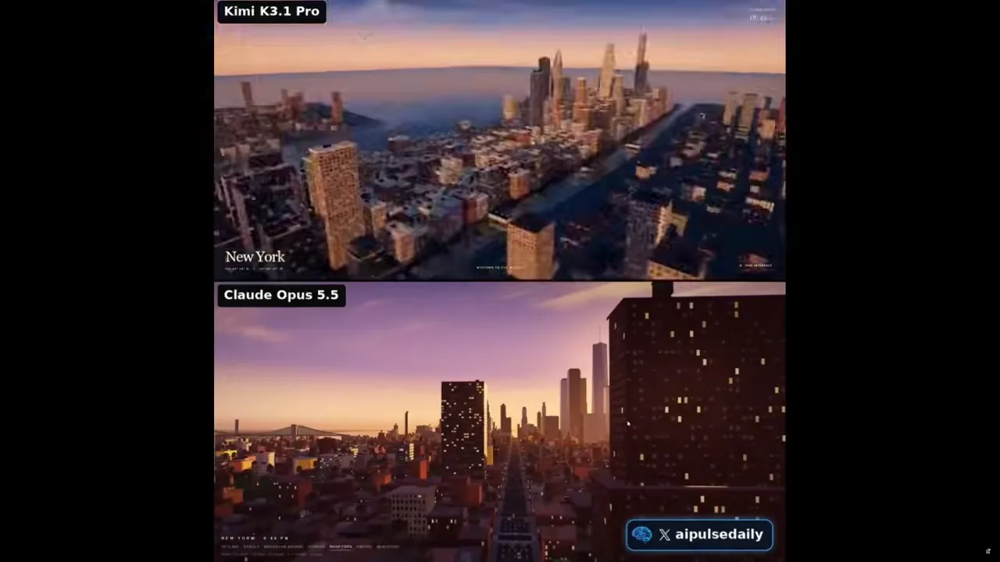
Blender 같은 전문 도구
Kimi K3.1 Pro는 Blender, Unreal Engine, CAD(Computer-Aided Design) 소프트웨어 같은 전문 도구도 직접 다뤄요. 아래는 Blender에서 원형 정원 위에 삼각형 격자 지붕을 짜는 장면이에요. 오른쪽 패널에 Start Frame, Stagger, Duration 같은 조립 애니메이션 값이 들어가 있어요.
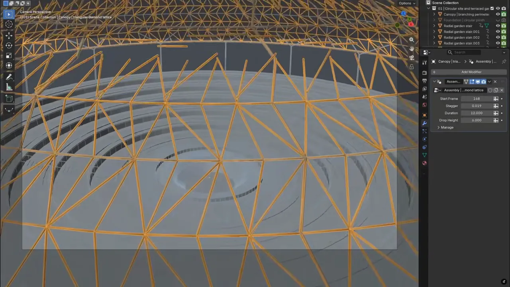
다른 오픈 웨이트 모델과 비교
같은 오픈 웨이트 진영끼리도 겨뤄요. 파리 개선문을 노을 속에 순수 Three.js로 만드는 과제예요. 아래 네 칸은 Kimi K3.1 Pro, Qwen 3.8 Max, GLM(General Language Model) 5.3 Prime, DeepSeek V4.1 Flash이고, 칸마다 걸린 시간, 토큰, 비용이 적혀 있어요.
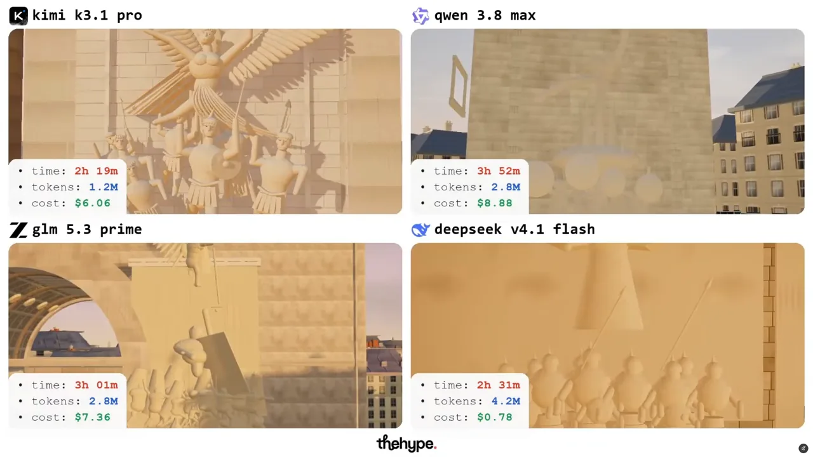
진행자는 Kimi가 이 결과를 6.6달러에 냈다고 말하지만, 화면에 적힌 값은 6.06달러예요. 그는 3D 환경이라면 Kimi가 자기 기본 모델이라고 말해요. 아래는 공식 페이지의 3D 자동차 랜딩 페이지 예시예요. 왼쪽 아래 색 견본으로 차 색을 바꿀 수 있어요.
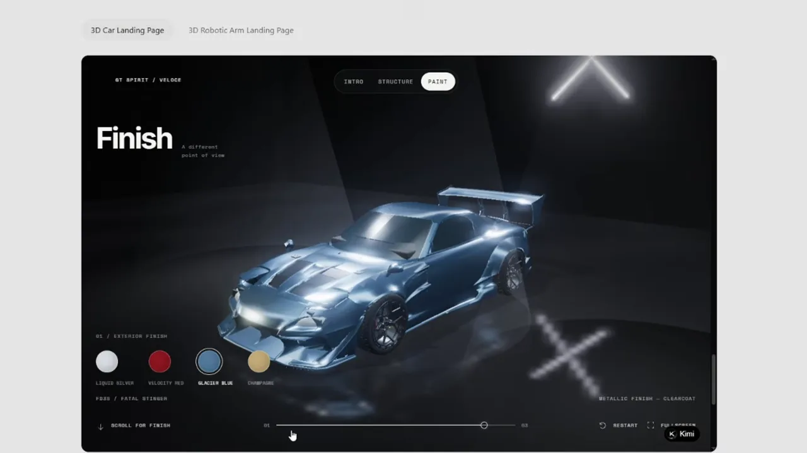
리포트, iPhone Duo, SVG, 복셀 탑
금융 리서치도 높은 벤치마크를 낸 분야예요. 아래는 Kimi가 만든 114쪽짜리 양자컴퓨팅 산업 리포트의 한 쪽이에요. 기관 투자자용 형식으로, 업종 실적을 시장 기대와 비교해요.
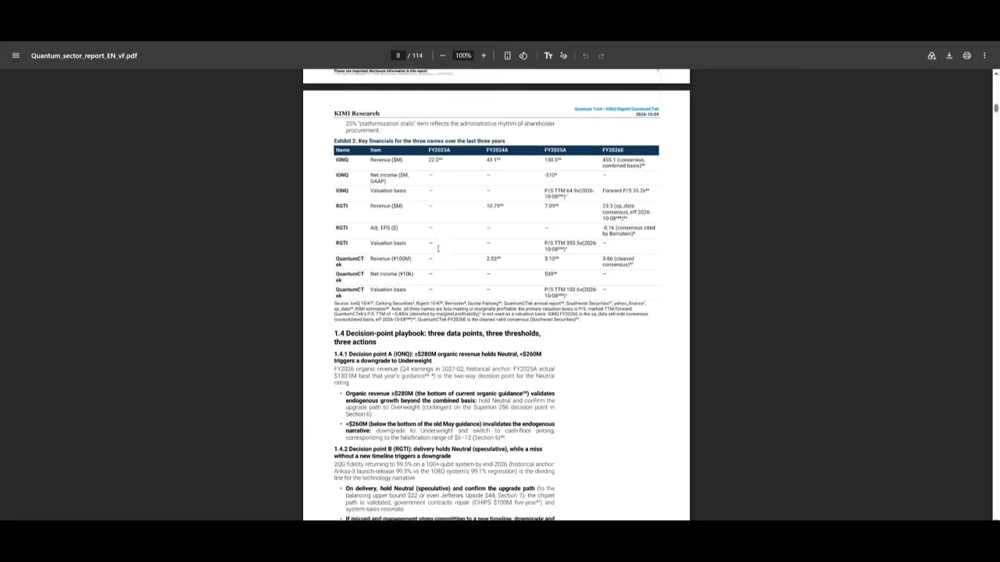
iPhone Duo 복제
막 나온 접는 아이폰 'iPhone Duo'를 복제한 예도 있어요. 아래는 펼친 화면 안에 'Getting Started with Wicker Weaving'이라는 앱 화면이 들어간 장면이에요. 왼쪽 패널에서 색과 화면을 바꿀 수 있어요.
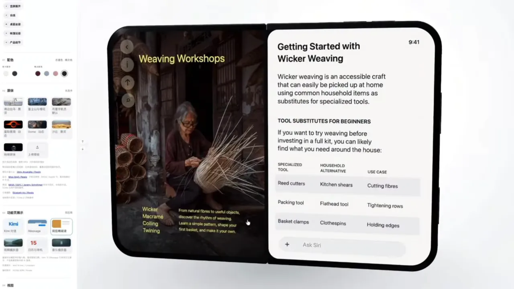
SVG 공작과 복셀 탑
최대 추론 모드로 SVG 코드만 써서 공작을 그린 예도 있어요. 아래 공작은 꼬리깃을 부채처럼 활짝 펼쳤어요. 깃털이 펼쳐지는 애니메이션까지 코드로 그렸다고 해요.
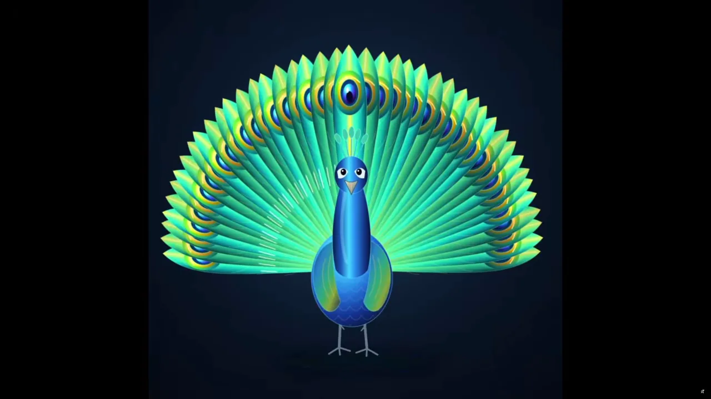
마지막 비교는 다리와 떠 있는 섬이 있는 3D 복셀 탑 섬이에요. 아래 왼쪽이 Kimi(5.71달러), 오른쪽이 Opus 5.5(17.13달러)예요.
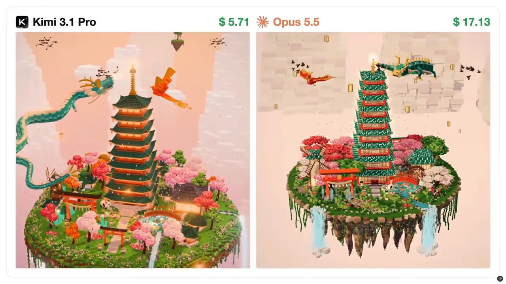
두 숫자를 막대로 놓으면 차이가 더 잘 보여요. 아래 위쪽 묶음이 비용, 아래쪽 묶음이 걸린 시간이에요.
약점과 진행자의 결론
약점도 보여 줘요. 실제 로봇 작업 벤치마크예요. 아래 막대에서 Opus 5.5와 Gemini 4 Argon이 48점, GPT-6 Astra가 47점인데 Kimi K3.1 Pro는 9점이에요. 오른쪽 네 칸은 "과일을 파란 그릇에 담아라", "병 세 개를 세워라" 같은 과제를 로봇 팔이 실제로 하는 장면이에요.
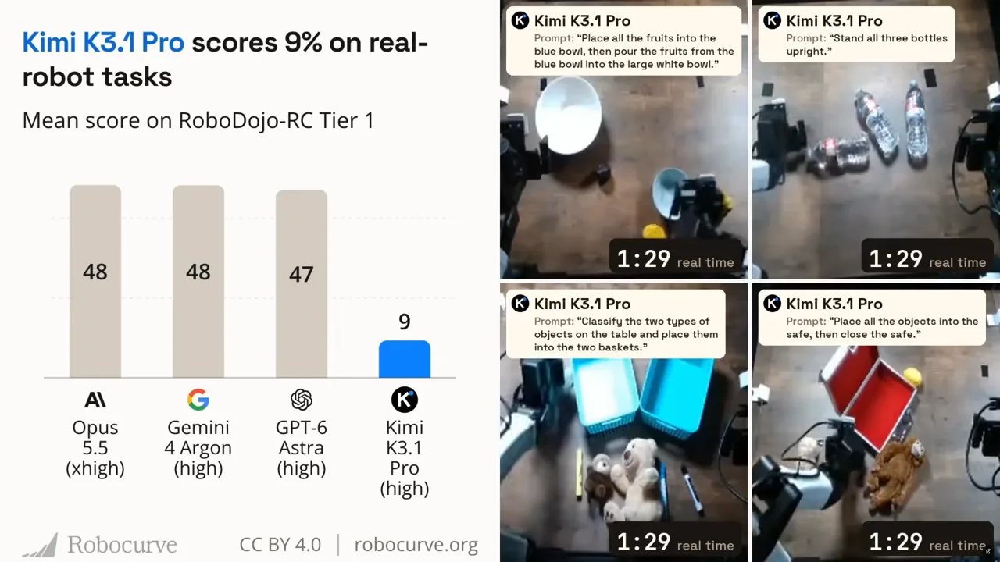
반대로 컴퓨터 사용은 잘해요. 아래는 Kimi가 그림판 앱을 직접 조작해서 오른쪽 위 사진 속 축구 선수를 따라 그린 결과예요.
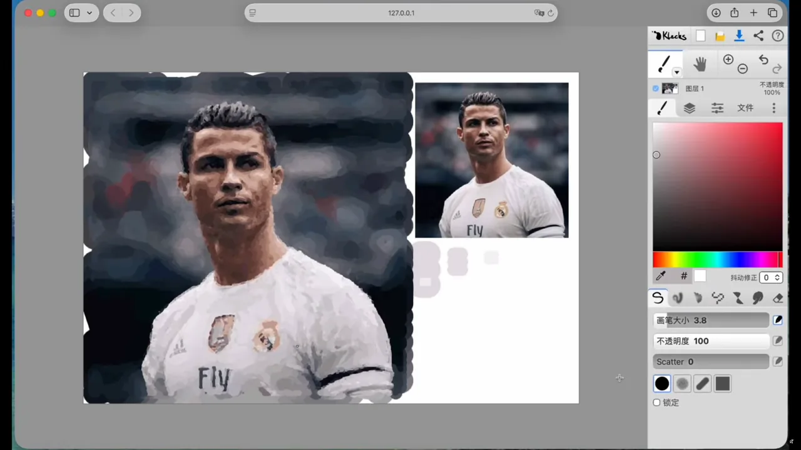
진행자의 결론
진행자는 K3.1 Pro를 오픈 웨이트 연구소에서 나온 모델 중 오랜만에 가장 인상적인 모델로 꼽아요. 코딩, 3D 생성, 에이전트 능력이 Opus 5.5와 GPT-6 Astra에 가깝고, 때로는 앞서면서 값은 몇 분의 일이에요.
그래도 완벽하지는 않아요. 복잡한 추론, 로봇, 전반적인 일관성에서 빈틈이 있고, 사용량 제한도 걱정스럽다고 해요. 그래서 그의 결론은 "아직 Opus 수준은 아니지만, 최상위 유료 모델이 없어도 여러 분야에서 최상위급 답을 얻을 수 있다"예요. 매일 쓰는 기본 모델로도 충분하다고 봐요.